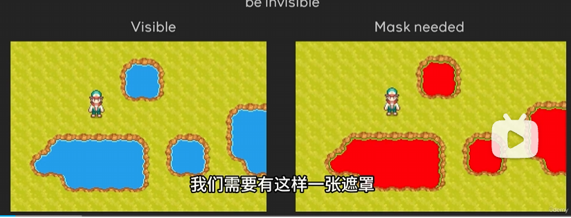

01UV坐标操控
目录
13-帧缓冲区
这个主要讲解BackBufferCopy的应用。
这个节点在屏幕着色器中很常用，在官方文档中也有提及：
https://docs.godotengine.org/zh-cn/4.x/tutorials/shaders/screen-reading_shaders.html
主要用于指定屏幕后处理时，使用的渲染内容部分。教程里是用该节点做了一个早期宝可梦游戏中湖面反射效果，其思路是如下的

- 为了做到湖面反射效果，需要标记出湖面区域，例如右边红色区域。
- 做一个完全跟角色上下对称的角色，放在人物脚底下。
- 只在标记出的湖面区域，红色区域内，渲染这个倒着的人。
由此来产生湖面倒影的效果。针对2D的像素风游戏，这是个很好的显示效果。需要注意的是，为了动画期间也能正确显示倒影效果，对称的角色，也需要同步动画播放。也就是逻辑上会复杂一些，需要同步处理。